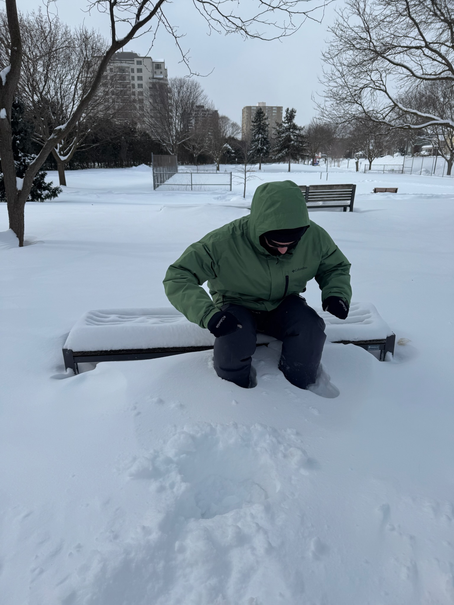

Dados Pessoais
Nome: Guilhermo Guido Paulino Stopassoli
E-mail: Guihermo.stopassoli@aluno.fmpsc.edu.br
Telefone: (48) 9 8812-3918
Empresario
Cargo: Responsavel producao
Empresa: Washoes. ltda
Descrição: Especialista em restauração de calçados.
Formação Acadêmica
Curso: Analise e desenvolvimento de sistemas
Instituição: FMP
Ano de Conclusão: 2027